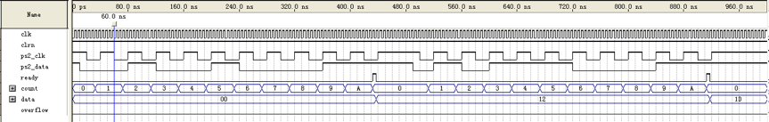
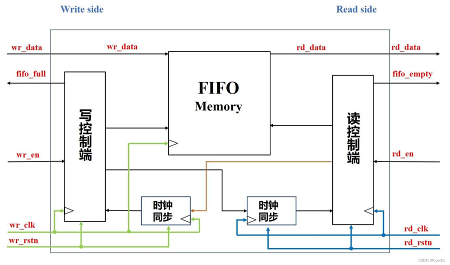
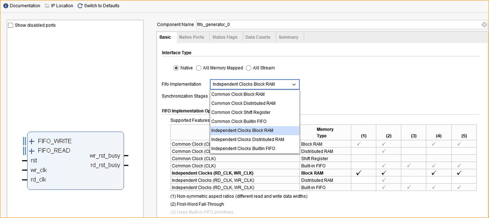
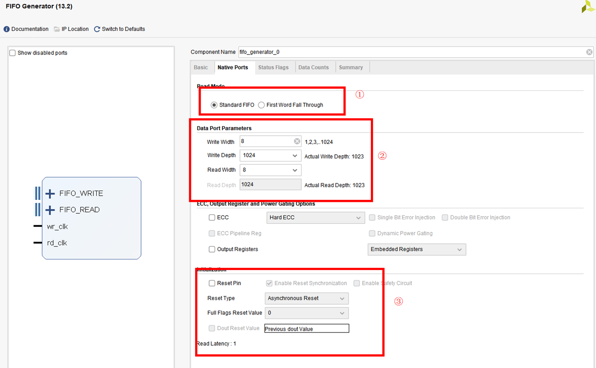

跨时钟域问题
在实现PS/2接口的练习中会看到示例代码有如下处理：
1 | always @(posedge clk) begin |

从图中可以看到：clk是一个快时钟，而ps2_clk是一个慢时钟。
我们知道边沿有效意味着电路会在时钟的有效沿对信号进行采样，但有效沿不是瞬时的，中间有短暂的不稳定态。
如何避免采样到不稳定态？这是一个典型的跨时钟域问题。
只要FPGA设计中的所有资源不全属于一个时钟域，就可能存在跨时钟域问题。发送跨时钟域问题的必要条件是不同时钟域之间存在信息交互。
跨时钟域的实现方式
单bit跨时钟域传输：
快时钟域的信号总会采集到慢时钟域传输来的信号，如果存在异步可能会导致采样数据出错，所以需要进行同步处理。
最常用的同步方法是双级触发器缓存法，俗称延迟打拍法。异步信号从一个时钟域进入另一个时钟域之前，将该信号用两级触发器连续缓存两次，可有效降低因为时序不满足而导致的亚稳态问题。电路示意图如下：
多比特跨时钟域的方式
异步FIFO
异步FIFO主要由五部分组成：RAM、写控制端、读控制端、两个时钟同步端 
- 1.双端口RAM：此处为伪双端口RAM进行数据存储与读出，有两组数据线、地址线、时钟线。
- 2.写控制端：写指针与满信号产生器，用于判断是否可以写入数据，写操作时，写使能有效且FIFO未满。
- 3.读控制端：读指针与空信号产生器，用于判断是否可以读取数据，读操作时，读使能有效且FIFO未空。
- 4.两个时钟同步端：读指针同步到写指针域进行“写满”判断，写指针同步到读指针域进行“读空”判断。
在Basic界面选择Independent Clocks Block RAM，代表的是异步时钟的FIFO，其他的选项都默认不修改。 

设置下一个页面Native Ports ,此页面可以设置读写位宽和深度，这里的①处选择第一个标准FIFO
第②处设置写位宽为8，写深度为1024，读位宽是8，读的深度是1024，③处是设置复位信号，这部分取消勾选，其他选项默认不勾选。
使用FIFO
找到IP核之后，点击lnstantiation Template左边的小三角符号，可以看到veo文件，这个veo文件就是调用IP核时需要的代码，下图时veo文件的代码，直接将该代码粘贴到自己的代码中就可以实现IP核的调用。